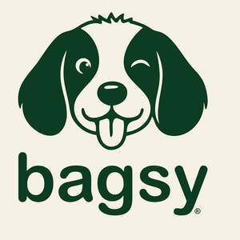
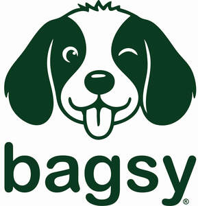
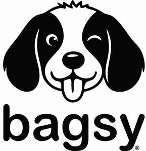

Trade Mark Journal No.2025/044 31 October 2025
UK00004281110 21 October 2025 (5,16,21)
Mark 1

Mark 2

Mark 3

- Class 5
- Pet wipes for sanitizing and for neutralizing odors; disposable pet diapers; dietary supplements for pets; vitamin and mineral supplements for pets; herbal anti-itch ointments for pets; disposable house training pads for pets; pet odor neutralizer.
- Class 16
- Plastic bags for disposing of pet waste; bags comprised of starch-based materials in the nature of a plastic substitute for disposing of pet waste; disposable paper pet wipes not impregnated with chemicals or compounds for grooming, cleansing and deodorizing; disposable housebreaking pads for puppies; pet crate mats; packaging material made of starches; bags [envelopes, pouches] of paper or plastics, for packaging; stickers [stationery]; transfers [decalcomania]; calendars; printed publications; greeting cards; wrapping paper; plastic film for wrapping; flyers.
- Class 21
- Portable dispensers not of metal for disposable pet waste bags; scoops for the disposal of pet waste; non-woven disposable textile pet wipes not impregnated with chemicals or compounds; pet feeding bowls; electronic pet feeders; pet grooming gloves; pet drinking bowls; pet treat jars; toothbrushes for pets; brushes for pets; cages for carrying pets; de-shedding brushes for pets; de-shedding combs for pets; litter boxes for pets; pet paw cleaners, non-electric; food containers for pet animals; liners adapted for pet litter boxes.
DNS Trade Limited